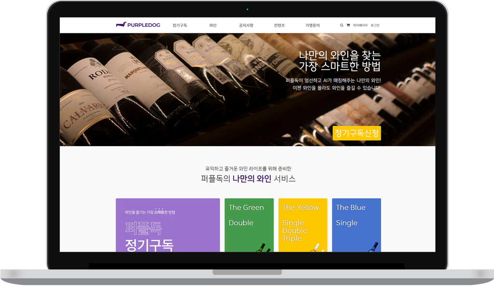
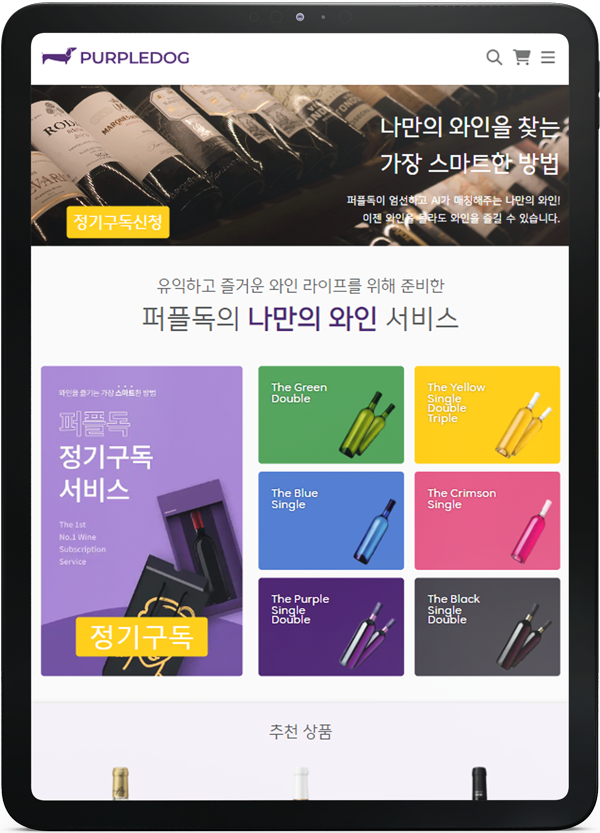
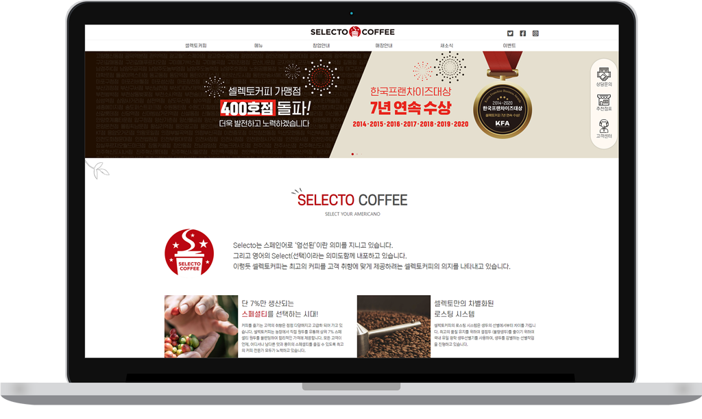
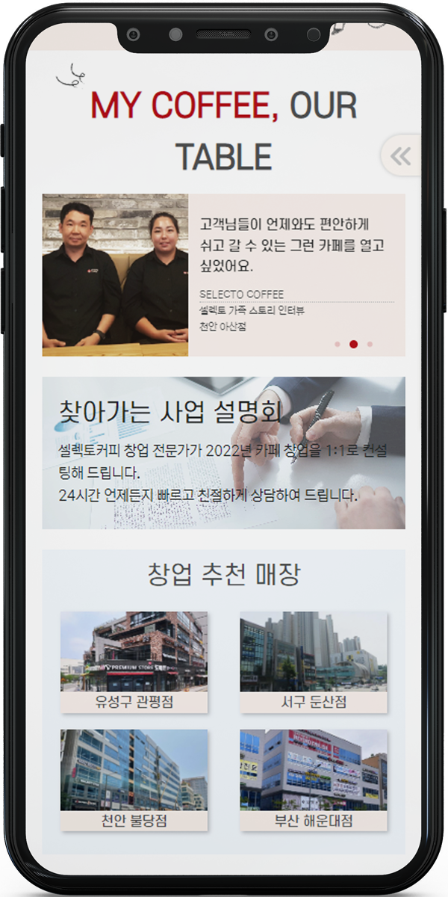
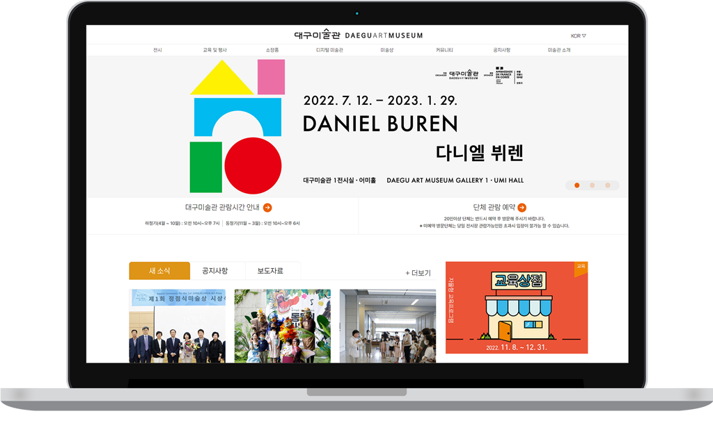
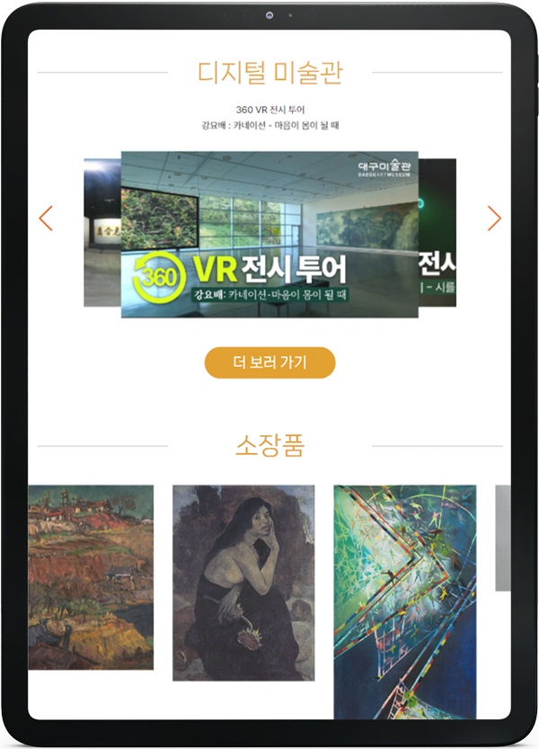
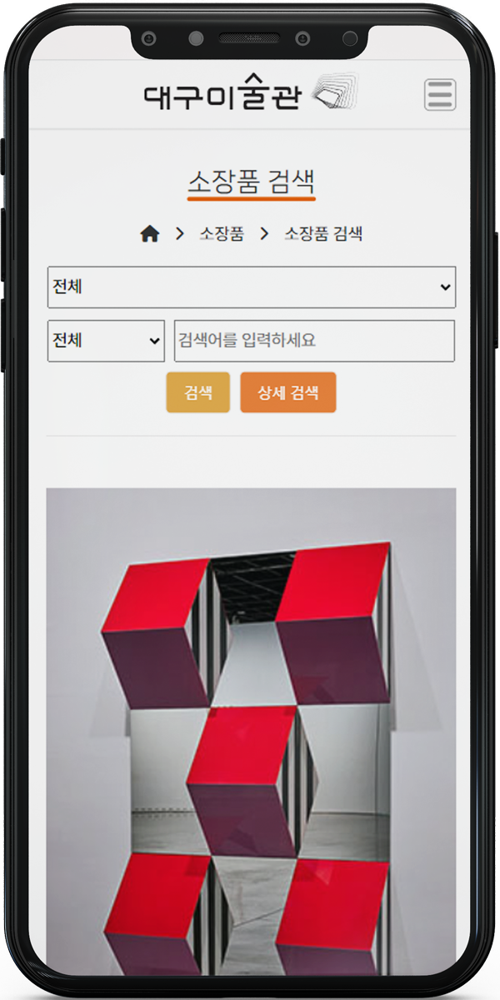
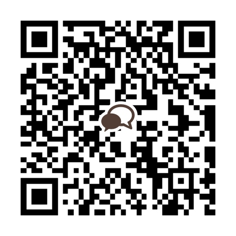

Click!
Ro sumin
Portfolio
Profile
“수다를 좋아하는 사람은 하루 종일 수다를 떨어도 지치지 않듯이,
컴퓨터와 수다 떠는걸 좋아하는 웹 퍼블리셔 노수민 입니다.”
그린컴퓨터아트학원 [과정평가형] 웹디자인기능사(웹퍼블리셔,프론트엔드) 취득과정 수료
-
피그마를 활용해 와이어 프레임 및 디자인 시안 제작이 가능하고 Ps/Ai를 활용해 이미지의 편집 및 보정을 할 수 있습니다.
-

웹표준을 준수하고 시맨틱 태그를 활용하여 주어진 시안에 맞게 HTML 구조문을 작성할 수 있습니다.
-

주어진 시안에 맞게 구조문에 디자인을 적용 할 수 있으며 미디어 쿼리를 활용한 반응형 레이아웃을 제작할 수 있습니다.
-
기초 문법을 이해하고 웹 페이지에 동적인 효과를 적용 할 수 있으며 다양한 플러그인을 활용할 수 있습니다.
Project
-
project_01_img
제목 : 사용자 편의성 개선을 위한 퍼플독 홈페이지 리뉴얼
기간 : 3주 (기획 / 디자인 / 코딩)
범위: 메인 페이지 1 (100%) / 반응형리뉴얼 포인트
모바일용으로 제작되어있던 메인 페이지를 모바일과 PC 사용자 모두 사용하기 편하도록 반응형으로 제작하였으며 핵심 서비스인 구독에 대한 정보를 메인 페이지에 배치함으로 사용자들이 구독 서비스에 접근하기 쉽도록 하였습니다. 와인의 고급스러움을 전달하기 위해 배경에 옅은 회색을 사용하였고 고딕계열의 폰트를 사용하였습니다. -
project_02_img
제목 : 사이트 UI 개선을 위한 셀렉토 커피 홈페이지 리뉴얼
기간 : 2주 (기획 / 디자인 / 코딩)
범위: 메인 페이지 1 (100%) / 반응형리뉴얼 포인트
컨텐츠 공간을 넓게 사용하고 여백을 넓게 주며 메인 페이지의 불필요한 콘텐츠들을 제거하고 컨텐츠를 재배치 하는 것으로 비좁아보이던 기존의 느낌을 없애고 핵심 컨텐츠들의 크기를 키워사용자들의 접근성을 높였으며 친근함을 주기 위해 손그림 형태의 일러스트를 사용하였습니다. -
project_03_img
제목 : 대구미술관 홈페이지 리뉴얼
기간 : 2주 (기획 / 디자인 / 코딩)
범위 : 메인 페이지 1 (100%) / 반응형
서브 페이지 1 (100%) / 반응형리뉴얼 포인트
메인 페이지에 부족했던 컨텐츠들을 채워넣어 휑한 느낌을 없애고 배경과 컨텐츠의 경계를 뚜렷하게 하여 사용자들의 혼란을 줄였으며 GNB에서 서브메뉴를 보여줌으로 사이트의 구조 파악이 원할하게 하였으며 반응형을 적용하여 다양한 디바이스에서 접속할 수 있도록 제작했습니다.
관공서 사이트이므로 깔끔한 형태의 폰트를 사용하였습니다.
Contact
Open Chatting Link
